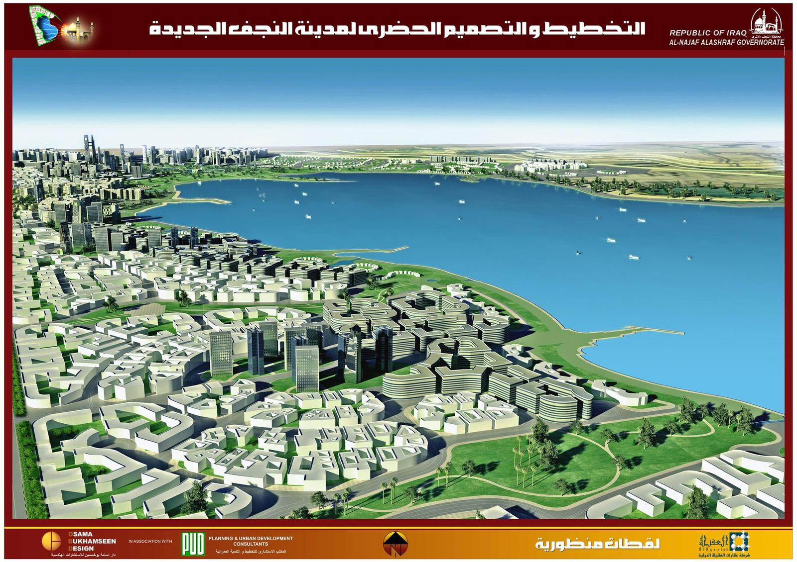

New Najaf City
Master plan · Najaf, Iraq
Concept master plan for a new city in Najaf for Al Aqeelah for Real Estate Development.
Najaf: Its estimated population in 2024 was about 1.41 million people. Source
Partners
PUD
Client
Al Aqeelah for Real Estate Development